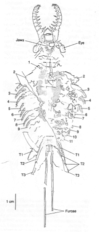

Anomalocaris
saron #1

This
photo of the head of Anomalocaris
saron, from the Chengjiang
lagerstatten in China, shows the armed anterior appendages and
prominent eyes. The central gut and dark paired structures to either
side are also apparent. |
Anomalocaris
saron #2
The
body of the Anomalocaris saron
specimen is also preserved, and shows overlapping swimming lobes,
tapering gradually backwards toward a well-developed fantail, and a
pair of delicate streaming furcae. |
|

A camera lucida drawing
of the combined
halves of the Anomalocaris
saron specimen indicate the body
proportions. The scale shows that the specimen length (minus furcae) is
~10 cm (<5 inches). It is thought to be a juvenile.
|
  My reconstruction of the
dorsal and ventral
view of Anomalocaris saron
is based on both the photographs and the camera lucida drawing. This
species seems superficially similar
to Anomalocaris canadensis.
My reconstruction of the
dorsal and ventral
view of Anomalocaris saron
is based on both the photographs and the camera lucida drawing. This
species seems superficially similar
to Anomalocaris canadensis. |
|
|
Amplectobelua
symbrachiata #1
 This
specimen of the Chengjiang anomalocarid Amplectobelua
symbrachiata had
large eyes, nine lateral swimming lobes, and
a pair of long posterior furcae (antenna-like filaments). As with the
specimen of Anomalocaris saron,
dark symmetrical masses appear on either side of the longitudinal axis
of the animal.
This
specimen of the Chengjiang anomalocarid Amplectobelua
symbrachiata had
large eyes, nine lateral swimming lobes, and
a pair of long posterior furcae (antenna-like filaments). As with the
specimen of Anomalocaris saron,
dark symmetrical masses appear on either side of the longitudinal axis
of the animal. |
Amplectobelua
symbrachiata #2
The
counterpart to the specimen at left better shows the extended swimming
lobes, as well as details of the anterior appendage, which is quite
distinctive among anomalocarids. I've reversed the photograph, so that
it matches the camera lucida figure below. The dorsal fantail is not
well-preserved in this specimen. |
|
My reconstruction of the
bauplan
of Amplectobelua
shows the impaling anterior appendages, large eyes, extended swimming
lobes, and compact form that characterize this species. |

.
A camera lucida drawing of
the
specimen clarifies some features, including the distinctive anterior
appendages (RAP and LAP). The detail of the appendage in B shows the
formidable spine arising from the base of the appendage. |